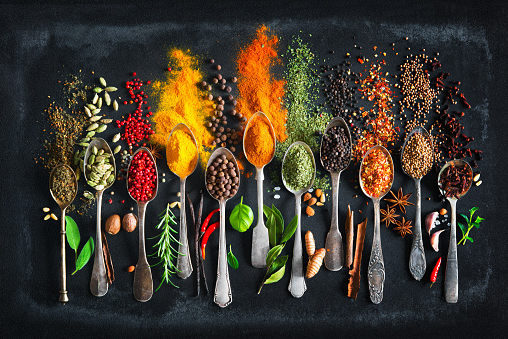

If you're here, then you also love food! Whether that's actually cooking and baking, eating (duh!), or just browsing some quality food porn, make yourself at home! You will find a variety of sweet and savory favourites, curated by an amateur but passionate home cook. I am also always looking for new ideas and inspiration! Please use my submission page to send me your own recipes, or links to your favourites online.
If you're here to find something for dinner or dessert, here's a handy tool to make sure you're always using the right portions no matter which measurement system the original recipe uses. It's an international world, and I'm an international girl. Don't let maths ruin your day!